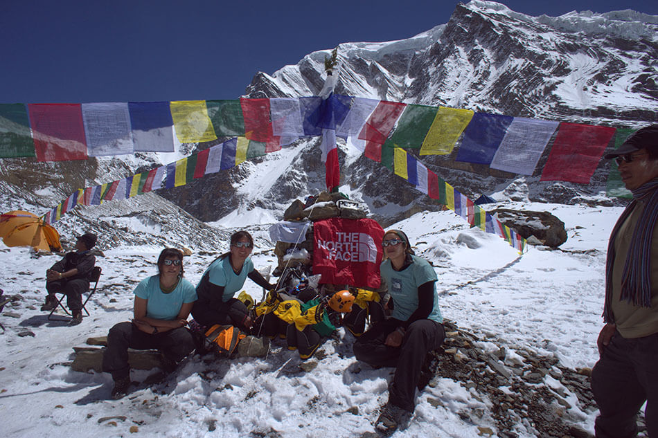
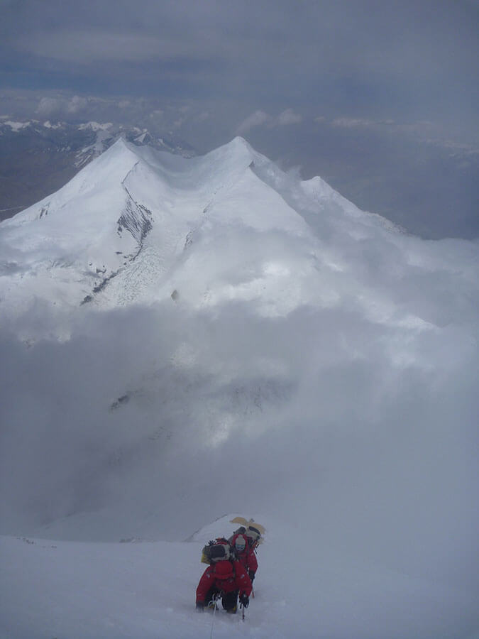

El inicio.
El Dhaulagiri o montaña de las tormentas es la séptima montaña más alta del planeta gracias a sus 8.167 metros de altura que la hacen formar parte del famoso grupo de los 14 ochomiles. Su nombre proviene del sánscrito Dhavala Giri que significa "Montaña Deslumbrante" y a la fecha de hoy no ha sido ascendida por una cordada chilena.Nuestra expedición se enmarcaba en el proyecto Bicentenario que tenía como meta coronar las tres montañas que se alzan sobre los 8.000 metros de altitud que no contaban con ascensos chilenos. Nosotras, realizaríamos el cuarto intento nacional y el primero constituido por un grupo de mujeres; un bonito y desafiante objetivo.
Más que un simple grupo de montañistas, éramos un grupo de amigas y compañeras que habíamos compartido muchos viajes y aventuras juntas y que un día decidimos soñar y emprender este desafío. Sin embargo, éramos unas novicias en el tema de armar una expedición a uno de estos colosos del Himalaya que, además, tras estudiar sus estadísticas nos dimos cuenta de que su reputación no era de las mejores, pero lo que no faltaba en este grupo era motivación de sobra para intentarlo.
Fueron meses complicados entre preparar la logística de la expedición, alimentación, auspicios, entrenamientos, trabajos y vida. Hasta que finalmente llegó la hora de partir, después de algunas despedidas y con algo de nervios, dejamos Santiago el 1 de abril del 2011 rumbo a nuestro desafío ¡Apenas podíamos creerlo!
Tres días nos tomó llegar a nuestro destino final Katmandú, la capital de Nepal. Tras conexiones, escalas y horas de espera en los aeropuertos, llegamos finalmente al Nirvana Garden, nuestro hotel ubicado en el corazón de Thamel, barrio turístico que aloja a la mayoría de los trekkeros y expedicionarios que año a año visitan los diversos destinos de Nepal.
Durante nuestros días en Katmandú tuvimos algunas reuniones con la agencia, en donde conocimos a Dawa, nuestro Sidar (jefe de campamento) y afinamos los últimos detalles logísticos, elegimos nuestra comida de altura, visitamos la oficina de turismo y lo más importante, conocimos a nuestro Lama, quien rezaría por nosotras durante el tiempo que duraría la expedición. Fue así como después de cuatro ajetreados días que se pasaron volando, por fin partimos rumbo a la montaña.
Camino a la montaña.
En un pequeño bus, entre medio de carga, porteadores y mucha de la gente que nos acompañaría hasta nuestro campamento base, dejamos las callecitas de Katmandú para viajar 14 horas por angostos caminos bajo un constante sonar de bocinas de autos hasta llegar al poblado de Beni. Creo, sin lugar a dudas, que esta fue la parte más peligrosa de la expedición.Tras una noche en Beni, seguimos cuatro horas más en un bus, aún más estrecho, hasta Darbang, un caserío al final del camino de autos en donde nos estaba esperando el grupo de porteadores para realizar un trekking de 10 días en el que llevaríamos todo lo necesario para permanecer un mes y medio en la montaña. En este punto tomamos por primera vez nuestras mochilas para sumergirnos en un húmedo ambiente selvático, ganando poco a poco altura. Las tormentas eran recurrentes y se hacían notar con estridentes truenos que nos recordaban hacia donde nos acercábamos. Fue así como caminamos por angostos senderos pasando por diversos caseríos como Tatopani, Boghara, y Salagari, entre otros, hasta que llegamos a nuestro último campamento ubicado en una morrena glaciar, el Campamento Italiano, desde donde se esbozaban las siluetas de los grandes colosos que rodean al Dhaulagiri.
Campamento Base.
Llegamos al Campamento Base ubicado a 4.700 metros. Hasta aquí nos acompañó nuestro jefe de cocina Asman y sus ayudantes Chombe y Temba. Ellos, junto a nuestro Sidar Dawa, permanecerían con nosotros todo el tiempo que duraría la expedición.Desde el Campamento Base podíamos distinguir claramente una formación rocosa conocida como "El Pequeño Eiger", llamado así debido a su parecido con la emblemática montaña ubicada en el corazón de los Alpes. Junto a éste, se podían apreciar cinco corredores de avalanchas que atraviesan la ruta que más adelante utilizaríamos para llegar al Campamento 1.
A pesar de estar ansiosas por partir lo antes posible a los campamentos superiores, éramos respetuosas de las costumbres budistas y nuestro Lama nos había designado un día para hacer nuestra Puja, ceremonia en donde se homenajea a la deidad de la montaña con ofrendas, rezos y en donde se bendice todo el equipo de escalada que se utilizará durante la ascensión. Esto nos llevó a permanecer un par de días en el Campamento Base antes de la partida, ya que para los Sherpas ninguna expedición puede comenzar sin la ceremonia.
Mientras esperábamos la ceremonia, los días pasaron bastante rápido. Estando allí, aprovechamos cualquier instancia para lograr una mejor aclimatación, escalando boulders en roca y hielo, y también visitando a las expediciones vecinas, pues no estábamos solas en la montaña; aquél 2011 se cumplían los 50 años de la primera ascensión, por lo que había más expediciones que en una temporada normal. Fue así como nos encontramos con equipos de Korea, Noruega, Italia y unos amigos de Alaska que querían bajar la montaña en esquí, lamentablemente uno de ellos sufrió una enfermedad respiratoria que los obligo a retornar. 
Intento a la cumbre.
Ya ansiosas con la idea de subir a los campamentos superiores, y entre abrazos de despedida de nuestros amigos Asman, Chombe y Temba, abandonamos el Campamento Base. La llegada al Campamento 1 fue muy expedita, arribamos temprano con la idea de descansar lo suficiente para emprender camino al Campamento 2 antes del amanecer.Al llegar al Campamento 2 pudimos comprobar que todo el equipo seguía intacto. Esa noche dormimos allí, pero no fue una buena noche, ya que nuestra terraza era bastante estrecha y el descanso no fue muy reponedor.
Al día siguiente emprendimos el camino al Campamento 3, ubicado a 7.400 metros, en lo que fue el día más largo de la expedición, ascendiendo por una pendiente constante de 50 grados.
Llegamos muy tarde al Campamento 3 en medio de una fuerte tormenta de viento. Nos tomó algo de tiempo recuperarnos del frío por lo que tomamos la decisión de esperar un día más y "descansar", a diferencia del equipo noruego que enfiló a la cumbre esa misma noche. El informe meteorológico nos daba un día bueno antes del mal tiempo. El día de descanso aprovechamos de hidratarnos bien y de sacar fotos aprovechando la increíble vista que se tiene desde ese espectacular balcón.
Día de Cumbre.
A las 23:00 horas sonó el despertador. Estábamos muy nerviosas; el trabajo de muchos meses estaba por llegar a su fin. Alrededor de la 01:00 de la madrugada partimos rumbo a la cumbre. Solo nuestras linternas se vislumbraban en aquella noche estrellada, el chasquido de los crampones nos acompañaba paso a paso, la pendiente no aflojaba de los 50 a 60 grados.Paramos un par de veces a hidratarnos. Ya al amanecer continuábamos abriéndonos paso entre una nieve muy inestable. Las nubes que en un comienzo se veían lejos, cada vez se acercaban más, hasta que, sin darnos cuenta, nos cubrieron por completo. Seguimos caminando en medio de la ventisca con la esperanza de que en algún momento el tiempo mejoraría, pero al pasar el tiempo, la intensidad de la nevada y el viento aumentaban cada vez más. Fue así, que en medio de este hostil escenario tomamos la difícil decisión de bajar.
Retornamos al Campamento 3 tras 17 horas de actividad, muy cansadas y con las ganas de haber coronado la cumbre del Dhaulagiri que quedó ahí, a tan solo 200 metros de distancia.
Ya en el Campamento Base, con esta mágica montaña a nuestras espaldas que nos acogió durante casi dos meses, comenzamos el retorno. Nos invadían sentimientos encontrados. Por un lado, la alegría de haber compartido hermosos momentos juntas, los más bellos paisajes y atardeceres, el haber conocido valiosas personas y la tranquilidad de haber vuelto sanas y salvas; pero al mismo tiempo con la tristeza de no haber logrado nuestro objetivo.
Ya de vuelta en Katmandú recibimos las sabias palabras de un amigo con mucha experiencia en el Himalaya que nos dijo "Lo más importante es el viaje, no el destino; y la verdad, es que lo que más disfrutamos fue eso, el camino recorrido. 